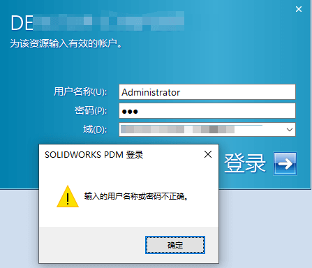
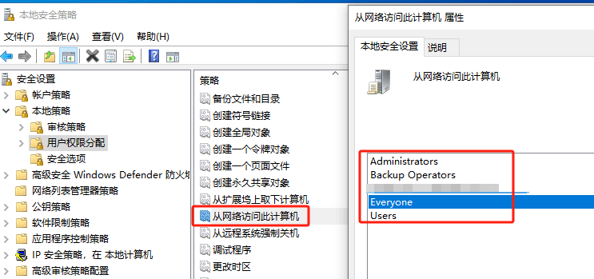
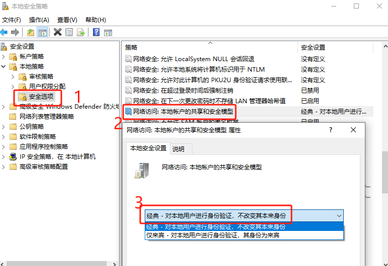

PDM服务器密码不正确
首次安装 SOLIDWORKS PDM 客户端后，必须在 PDM 管理中识别存档服务器。

加载项服务器到客户端计算机。将客户端计算机连接到存档服务器时，将登录的用户配置文件与用户配置文件的“附加访问权限”和“管理访问权限”进行比较。如果用户配置文件凭据不匹配，系统将提示用户登录 PDM 存档服务器。
客户端添加服务器连接失败，输入的用户名或密码不正确

需确保在网络访问到服务器的电脑用户存在，并由密码设置（空密码好像是不行的）

解决方法:本地安全策略>本地策略>安全选项>网络访问:本地账户的共享和安全模型>把该项改为经典模
